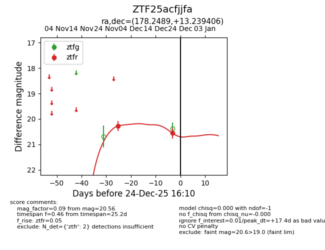
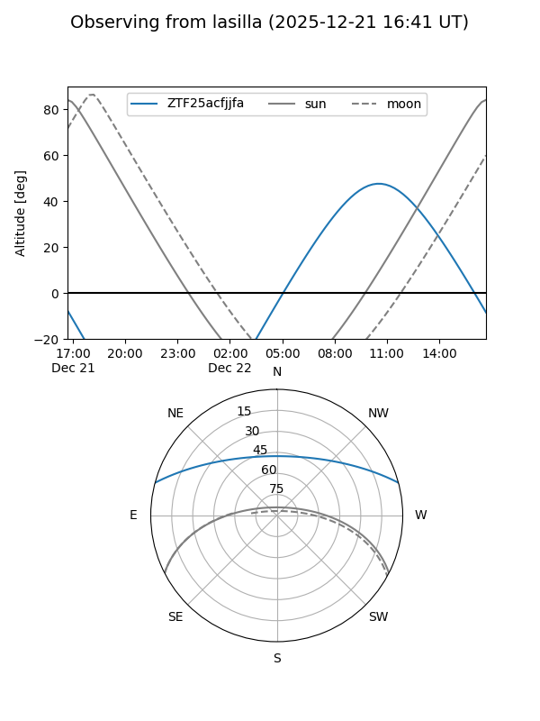
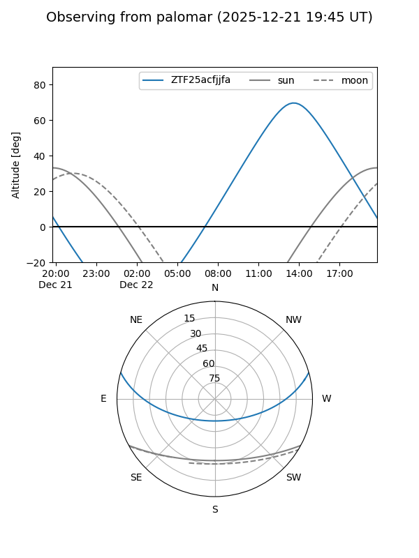
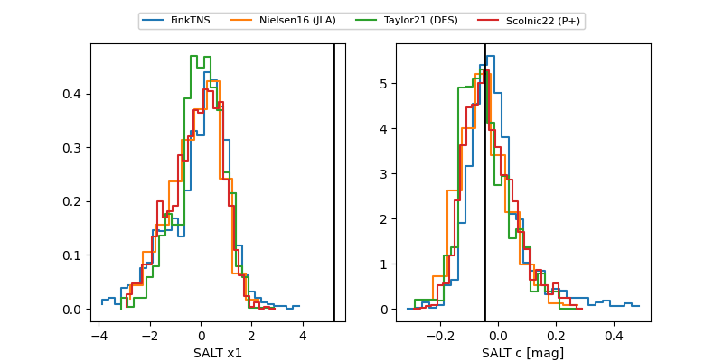

ZTF25acfjjfa
Target ZTF25acfjjfa at 2025-12-24 16:17
Aliases and brokers:
FINK: fink-portal.org/ZTF25acfjjfa
Lasair: lasair-ztf.lsst.ac.uk/objects/ZTF25acfjjfa
ALeRCE: alerce.online/object/ZTF25acfjjfa
alt names
ZTF25acfjjfa (ztf,fink_ztf)
Coordinates:
equatorial (ra, dec) = 178.2489,+13.23941
equatorial (HMS+DMS) = 11:52:59.72,+13:14:21.86
galactic (l, b) = (255.5188,+70.51830)
Flags:
Photometry:
last ztfr=20.56
2 ztfr detections
Lightcurve

Visibility


Additional plots
